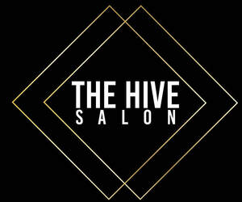
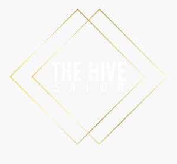

Trade Mark Journal No.2026/008 20 February 2026
UK00004333153 31 January 2026 (3,21,26,41,44)
Mark 1

Mark 2

- Class 3
- Hair texturizers; Hair pomades; Hair cosmetics; Hair shampoos; Hair shampoo; Hair styling lotions; Hairstyling serums; Hair lacquers; Hair bleach; Styling sprays for the hair; Hair lighteners; Hair styling waxes; Hair dye; Hair lotions; Hair relaxers; Hair colourants; Hair moisturizers; Hair moisturisers; Hair styling spray; Hair serums; Dyes for the hair; Hair dyes; Hair styling gels; Styling gels for the hair; Colouring lotions for the hair; Hair mascara; Hair colouring; Hair styling gel; Hair mousse; Hair rinses [for cosmetic use]; Hair lacquer; Hair bleaches; Cosmetic hair lotions; Hair tonics; Hair conditioner; Hair tonics [for cosmetic use]; Hair colour removers; Cosmetics for the use on the hair; Non-medicated hair shampoos; Hair care serums; Mousses [toiletries] for use in styling the hair; Colour removers for the hair; Hair care lotions; Hair sprays; Hair permanent treatments; Beauty care cosmetics; Beauty serums; Beauty lotions; Beauty preparations for the hair; Beauty creams; Beauty masks; Masks (Beauty -); Facial beauty masks; Beauty gels; Beauty creams for body care; Beauty tonics for application to the face; Beauty care preparations; Beauty tonics for application to the body; Distilled oils for beauty care; Beauty milks; Skincare cosmetics; Beauty milk; Beauty masks for hands; Beauty serums with anti-ageing properties; Body cleaning and beauty care preparations; Nail cosmetics; Natural cosmetics; Hair care lotions [for cosmetic use]; Hair care creams [for cosmetic use]; Hair tonic [for cosmetic use]; Hairstyling masks; Natural makeup; Hair preservation treatments for cosmetic use; Cosmetics; Facial creams [cosmetics]; Nail tips [cosmetics]; Nail makeup; Cosmetics for suntanning; Body and facial creams [cosmetics]; Hair care serum; Hair strengthening treatment lotions; Hair care preparations; Hair care creams; Hair care masks; Shampoos for human hair; Hair color; Hair care agents; Hair grooming preparations; Makeup; Make-up; Facial makeup; Hair styling preparations; Skin make-up; Hair lotion; Hair cream; Hair masks; Hair creams; Cosmetic preparations for the hair and scalp; Lip makeup; Cosmetic hair dressing preparations; Hair powder; Powder for make-up; Make-up powder; Powder (Make-up -); Organic makeup; Hair balms; Hair bleaching preparations; Bleaching preparations for the hair; Hair gel; Theatrical makeup; Eye makeup; Hair balm; Hair straightening preparations; Eyes make-up; Make-up preparations; Hair removal and shaving preparations; Hair color removers; Make-up for the face; Hair tinting preparations; Hair curling preparations; Cosmetic hair care preparations; Mousses being hair styling aids; Tints for the hair; Hair coloring preparations; Make-up remover; Hair wax; Hair gels; Hair mousses; Hair dyeing preparations; Make-up preparations for the face and body; Styling paste for hair; Hair cleaning preparations.
- Class 21
- Combs for back-combing hair; Hair combs; Hair brushes; Hair for brushes; Hair tinting brushes; Cosmetic, hygiene and beauty care utensils; Make-up brushes.
- Class 26
- Hair barrettes; Hair curlers; Hair extensions; Hair decorations; Hair scrunchies; Tresses of hair; Hair (Tresses of -); Hair tresses; Bridal headpieces in the nature of ornamental hair combs; Plaits of hair; Hair twisters [hair accessories]; Hair elastics; Hair ornaments, hair rollers, hair fastening articles, and false hair; Human hair; Plaited hair; Ornaments (Hair -); Ornaments for the hair; Hair bands; Hair clips; Bands for the hair.
- Class 41
- Instruction in cosmetic beauty; Beauty school services; Teaching of beauty skills; Education; Vocational education; Academy services (Education -); Adult education services; Education and training; Education services; Academies [education]; Vocational education and training services; Training and education services; Education and training services; Education, teaching and training; Education services relating to fashion; Education services related to the arts.
- Class 44
- Hair salon services; Salons (Hairdressing -); Hairdressing salons; Hair dressing salon services; Hairdressing salon services; Salon services (Hairdressing -); Services of a hair and beauty salon; Hair salon services for women; Hair salon services for children; Hair salon services for men; Beauty salons for wig cutting; Airbrush tanning salon services; Nail salon services; Hairdressing; Hair perming services; Beauty salon services; Salon services (Beauty -); Hair braiding services; Barber shop services; Hair styling services; Hair styling; Shampooing of the hair; Hair dyeing services; Beauty salons; Salons (Beauty -); Manicure and pedicure services; Hair coloring services; Barber shops; Hair colouring services; Hair straightening services; Beautician services; Hairdressing services; Barber services; Services of a barber; Skin care salon services; Hair tinting services; Hair cutting services; Eyelash perming services; Hair curling services; Manicure services; Hair weaving services; Hair cutting; Rental of machines and apparatus for use in beauty salons or barbers' shops; Beauty treatment; Beauty care; Beauty consultation; Beauty aesthetic services; Beauty consultancy; Facial beauty treatment services; Beauty therapy services; Beauty treatment services; Beauty therapy treatments; Beauty care services; Beauty care of feet; Skin care salons; Hygienic and beauty care; Beauty consultation services; Beauty treatment services especially for eyelashes; Hygienic and beauty care services; Beauty care services provided by a health spa; Human hygiene and beauty care; Cosmetic treatment for the hair; Cosmetic treatment services for the body, face and hair; Cosmetic make-up services; Provision of hygienic and beauty care services; Beauticians (Services of -); Haircare services; Hair care services; Services for the care of the hair; Hair treatment; Hair treatment services; Hair restoration services; Hair extension services; Hair highlighting services; Hair restoration; Advisory services relating to hair care; Personal therapeutic services relating to hair regrowth; Personal hair removal services; Advice relating to hair care; Hair weaving.
Katrina McMahon